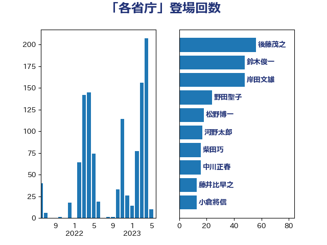

単語「各省庁」

| 後藤茂之 | 自由民主党 | 56 回 |
| 鈴木俊一 | 自由民主党 | 48 回 |
| 岸田文雄 | 自由民主党 | 48 回 |
| 野田聖子 | 自由民主党 | 24 回 |
| 松野博一 | 自由民主党 | 18 回 |
| 河野太郎 | 自由民主党 | 17 回 |
| 柴田巧 | 日本維新の会 | 16 回 |
| 中川正春 | 立憲民主党 | 16 回 |
| 藤井比早之 | 自由民主党 | 13 回 |
| 小倉將信 | 自由民主党 | 13 回 |
| 小林鷹之 | 自由民主党 | 12 回 |
| 西村康稔 | 自由民主党 | 11 回 |
| 井上貴博 | 自由民主党 | 11 回 |
| 阿部司 | 日本維新の会 | 10 回 |
| 葉梨康弘 | 自由民主党 | 10 回 |
| 松本剛明 | 自由民主党 | 10 回 |
| 中谷一馬 | 立憲民主党 | 10 回 |
| 野村哲郎 | 自由民主党 | 9 回 |
| 有村治子 | 自由民主党 | 9 回 |
| 岡田直樹 | 自由民主党 | 9 回 |
| 猪瀬直樹 | 日本維新の会 | 8 回 |
| 岸真紀子 | 立憲民主党 | 8 回 |
| 塩村あやか | 立憲民主党 | 8 回 |
| 古川元久 | 国民民主党 | 8 回 |
| 加藤勝信 | 自由民主党 | 8 回 |
| 馬場雄基 | 立憲民主党 | 7 回 |
| 音喜多駿 | 日本維新の会 | 7 回 |
| 重徳和彦 | 立憲民主党 | 7 回 |
| 伊藤俊輔 | 立憲民主党 | 7 回 |
| 伊東信久 | 日本維新の会 | 7 回 |
| 上田清司 | 国民民主党 | 7 回 |
| 高木かおり | 日本維新の会 | 6 回 |
| 鈴木義弘 | 国民民主党 | 6 回 |
| 足立康史 | 日本維新の会 | 6 回 |
| 石川大我 | 立憲民主党 | 6 回 |
| 牧島かれん | 自由民主党 | 6 回 |
| 沢田良 | 日本維新の会 | 6 回 |
| 岬麻紀 | 日本維新の会 | 6 回 |
| 谷公一 | 自由民主党 | 5 回 |
| 浅野哲 | 国民民主党 | 5 回 |
| 梅村みずほ | 日本維新の会 | 5 回 |
| 松本尚 | 自由民主党 | 5 回 |
| 斉藤鉄夫 | 公明党 | 5 回 |
| 奥下剛光 | 日本維新の会 | 5 回 |
| 塩田博昭 | 公明党 | 5 回 |
| 藤岡隆雄 | 立憲民主党 | 4 回 |
| 緒方林太郎 | 無所属 | 4 回 |
| 米山隆一 | 立憲民主党 | 4 回 |
| 磯崎仁彦 | 自由民主党 | 4 回 |
| 田村まみ | 国民民主党 | 4 回 |
| 池田佳隆 | 自由民主党 | 4 回 |
| 水野素子 | 立憲民主党 | 4 回 |
| 森屋宏 | 自由民主党 | 4 回 |
| 柚木道義 | 立憲民主党 | 4 回 |
| 平沼正二郎 | 自由民主党 | 4 回 |
| 岡本三成 | 公明党 | 4 回 |
| 山本博司 | 公明党 | 4 回 |
| 山崎誠 | 立憲民主党 | 4 回 |
| 山岸一生 | 立憲民主党 | 4 回 |
| 小林史明 | 自由民主党 | 4 回 |
| 大家敏志 | 自由民主党 | 4 回 |
| 城井崇 | 立憲民主党 | 4 回 |
| 井坂信彦 | 立憲民主党 | 4 回 |
| 青山大人 | 立憲民主党 | 3 回 |
| 長浜博行 | 無所属 | 3 回 |
| 鈴木英敬 | 自由民主党 | 3 回 |
| 金子恵美 | 立憲民主党 | 3 回 |
| 赤池誠章 | 自由民主党 | 3 回 |
| 西岡秀子 | 国民民主党 | 3 回 |
| 自見はなこ | 自由民主党 | 3 回 |
| 福田昭夫 | 立憲民主党 | 3 回 |
| 石川博崇 | 公明党 | 3 回 |
| 石垣のりこ | 立憲民主党 | 3 回 |
| 石井章 | 日本維新の会 | 3 回 |
| 田村智子 | 日本共産党 | 3 回 |
| 田村憲久 | 自由民主党 | 3 回 |
| 漆間譲司 | 日本維新の会 | 3 回 |
| 森山浩行 | 立憲民主党 | 3 回 |
| 杉尾秀哉 | 立憲民主党 | 3 回 |
| 平山佐知子 | 無所属 | 3 回 |
| 山下芳生 | 日本共産党 | 3 回 |
| 小野田紀美 | 自由民主党 | 3 回 |
| 宮路拓馬 | 自由民主党 | 3 回 |
| 宮本徹 | 日本共産党 | 3 回 |
| 室井邦彦 | 日本維新の会 | 3 回 |
| 太田房江 | 自由民主党 | 3 回 |
| 大野敬太郎 | 自由民主党 | 3 回 |
| 伊佐進一 | 公明党 | 3 回 |
| 井上信治 | 自由民主党 | 3 回 |
| 中川康洋 | 公明党 | 3 回 |
| 中司宏 | 日本維新の会 | 3 回 |
| 三木圭恵 | 日本維新の会 | 3 回 |
| 高木陽介 | 公明党 | 2 回 |
| 鈴木宗男 | 日本維新の会 | 2 回 |
| 金子恭之 | 自由民主党 | 2 回 |
| 金子俊平 | 自由民主党 | 2 回 |
| 里見隆治 | 公明党 | 2 回 |
| 近藤昭一 | 立憲民主党 | 2 回 |
| 輿水恵一 | 公明党 | 2 回 |
| 谷田川元 | 立憲民主党 | 2 回 |
| 西村明宏 | 自由民主党 | 2 回 |
| 蓮舫 | 立憲民主党 | 2 回 |
| 菅家一郎 | 自由民主党 | 2 回 |
| 若松謙維 | 公明党 | 2 回 |
| 若宮健嗣 | 自由民主党 | 2 回 |
| 美延映夫 | 日本維新の会 | 2 回 |
| 竹内真二 | 公明党 | 2 回 |
| 秋野公造 | 公明党 | 2 回 |
| 滝波宏文 | 自由民主党 | 2 回 |
| 滝沢求 | 自由民主党 | 2 回 |
| 湯原俊二 | 立憲民主党 | 2 回 |
| 浦野靖人 | 日本維新の会 | 2 回 |
| 浅川義治 | 日本維新の会 | 2 回 |
| 江島潔 | 自由民主党 | 2 回 |
| 榛葉賀津也 | 国民民主党 | 2 回 |
| 森田俊和 | 立憲民主党 | 2 回 |
| 梅村聡 | 日本維新の会 | 2 回 |
| 柳ヶ瀬裕文 | 日本維新の会 | 2 回 |
| 林芳正 | 自由民主党 | 2 回 |
| 木原誠二 | 自由民主党 | 2 回 |
| 早坂敦 | 日本維新の会 | 2 回 |
| 斎藤アレックス | 国民民主党 | 2 回 |
| 打越さく良 | 立憲民主党 | 2 回 |
| 川合孝典 | 国民民主党 | 2 回 |
| 島村大 | 自由民主党 | 2 回 |
| 山際大志郎 | 自由民主党 | 2 回 |
| 山田美樹 | 自由民主党 | 2 回 |
| 山田勝彦 | 立憲民主党 | 2 回 |
| 山口壯 | 自由民主党 | 2 回 |
| 尾崎正直 | 自由民主党 | 2 回 |
| 宮本岳志 | 日本共産党 | 2 回 |
| 大石あきこ | れいわ新選組 | 2 回 |
| 堀井学 | 自由民主党 | 2 回 |
| 坂本祐之輔 | 立憲民主党 | 2 回 |
| 坂本哲志 | 自由民主党 | 2 回 |
| 土屋品子 | 自由民主党 | 2 回 |
| 国光あやの | 自由民主党 | 2 回 |
| 和田政宗 | 自由民主党 | 2 回 |
| 吉川赳 | 無所属 | 2 回 |
| 古川禎久 | 自由民主党 | 2 回 |
| 保岡宏武 | 自由民主党 | 2 回 |
| 住吉寛紀 | 日本維新の会 | 2 回 |
| 今井絵理子 | 自由民主党 | 2 回 |
| 中川宏昌 | 公明党 | 2 回 |
| 上月良祐 | 自由民主党 | 2 回 |
| 高野光二郎 | 自由民主党 | 1 回 |
| 高橋千鶴子 | 日本共産党 | 1 回 |
| 高橋光男 | 公明党 | 1 回 |
| 高木真理 | 立憲民主党 | 1 回 |
| 高市早苗 | 自由民主党 | 1 回 |
| 馬淵澄夫 | 立憲民主党 | 1 回 |
| 馬場伸幸 | 日本維新の会 | 1 回 |
| 青柳陽一郎 | 立憲民主党 | 1 回 |
| 階猛 | 立憲民主党 | 1 回 |
| 阿部知子 | 立憲民主党 | 1 回 |
| 長友慎治 | 国民民主党 | 1 回 |
| 鎌田さゆり | 立憲民主党 | 1 回 |
| 鈴木貴子 | 自由民主党 | 1 回 |
| 鈴木敦 | 国民民主党 | 1 回 |
| 金城泰邦 | 公明党 | 1 回 |
| 野間健 | 立憲民主党 | 1 回 |
| 遠藤良太 | 日本維新の会 | 1 回 |
| 道下大樹 | 立憲民主党 | 1 回 |
| 近藤和也 | 立憲民主党 | 1 回 |
| 辻清人 | 自由民主党 | 1 回 |
| 辻元清美 | 立憲民主党 | 1 回 |
| 赤羽一嘉 | 公明党 | 1 回 |
| 赤嶺政賢 | 日本共産党 | 1 回 |
| 谷川とむ | 自由民主党 | 1 回 |
| 角田秀穂 | 公明党 | 1 回 |
| 西銘恒三郎 | 自由民主党 | 1 回 |
| 西野太亮 | 自由民主党 | 1 回 |
| 落合貴之 | 立憲民主党 | 1 回 |
| 萩生田光一 | 自由民主党 | 1 回 |
| 菅義偉 | 自由民主党 | 1 回 |
| 芳賀道也 | 国民民主党 | 1 回 |
| 舟山康江 | 国民民主党 | 1 回 |
| 羽田次郎 | 立憲民主党 | 1 回 |
| 緑川貴士 | 立憲民主党 | 1 回 |
| 紙智子 | 日本共産党 | 1 回 |
| 篠原孝 | 立憲民主党 | 1 回 |
| 稲津久 | 公明党 | 1 回 |
| 稲富修二 | 立憲民主党 | 1 回 |
| 秋葉賢也 | 自由民主党 | 1 回 |
| 秋本真利 | 自由民主党 | 1 回 |
| 福山哲郎 | 立憲民主党 | 1 回 |
| 神谷裕 | 立憲民主党 | 1 回 |
| 神谷政幸 | 自由民主党 | 1 回 |
| 神津たけし | 立憲民主党 | 1 回 |
| 石橋通宏 | 立憲民主党 | 1 回 |
| 田畑裕明 | 自由民主党 | 1 回 |
| 田村貴昭 | 日本共産党 | 1 回 |
| 田所嘉徳 | 自由民主党 | 1 回 |
| 田島麻衣子 | 立憲民主党 | 1 回 |
| 玄葉光一郎 | 立憲民主党 | 1 回 |
| 片山さつき | 自由民主党 | 1 回 |
| 熊谷裕人 | 立憲民主党 | 1 回 |
| 源馬謙太郎 | 立憲民主党 | 1 回 |
| 渡辺孝一 | 自由民主党 | 1 回 |
| 渡辺周 | 立憲民主党 | 1 回 |
| 渡辺博道 | 自由民主党 | 1 回 |
| 清水貴之 | 日本維新の会 | 1 回 |
| 浜田靖一 | 自由民主党 | 1 回 |
| 浜田聡 | NHK党 | 1 回 |
| 浜口誠 | 国民民主党 | 1 回 |
| 浅田均 | 日本維新の会 | 1 回 |
| 河西宏一 | 公明党 | 1 回 |
| 武田良太 | 自由民主党 | 1 回 |
| 横山信一 | 公明党 | 1 回 |
| 梶山弘志 | 自由民主党 | 1 回 |
| 梅谷守 | 立憲民主党 | 1 回 |
| 柳本顕 | 自由民主党 | 1 回 |
| 松木けんこう | 立憲民主党 | 1 回 |
| 松原仁 | 立憲民主党 | 1 回 |
| 末松信介 | 自由民主党 | 1 回 |
| 木村次郎 | 自由民主党 | 1 回 |
| 朝日健太郎 | 自由民主党 | 1 回 |
| 星北斗 | 自由民主党 | 1 回 |
| 日下正喜 | 公明党 | 1 回 |
| 新垣邦男 | 立憲民主党 | 1 回 |
| 徳永エリ | 立憲民主党 | 1 回 |
| 後藤祐一 | 立憲民主党 | 1 回 |
| 庄子賢一 | 公明党 | 1 回 |
| 市村浩一郎 | 日本維新の会 | 1 回 |
| 工藤彰三 | 自由民主党 | 1 回 |
| 川田龍平 | 立憲民主党 | 1 回 |
| 川崎ひでと | 自由民主党 | 1 回 |
| 岩谷良平 | 日本維新の会 | 1 回 |
| 山谷えり子 | 自由民主党 | 1 回 |
| 山田太郎 | 自由民主党 | 1 回 |
| 山本香苗 | 公明党 | 1 回 |
| 山崎正恭 | 公明党 | 1 回 |
| 山岡達丸 | 立憲民主党 | 1 回 |
| 小熊慎司 | 立憲民主党 | 1 回 |
| 小沼巧 | 立憲民主党 | 1 回 |
| 小池晃 | 日本共産党 | 1 回 |
| 小林一大 | 自由民主党 | 1 回 |
| 小川淳也 | 立憲民主党 | 1 回 |
| 小山展弘 | 立憲民主党 | 1 回 |
| 小宮山泰子 | 立憲民主党 | 1 回 |
| 宮本周司 | 自由民主党 | 1 回 |
| 宮崎政久 | 自由民主党 | 1 回 |
| 宗清皇一 | 自由民主党 | 1 回 |
| 安江伸夫 | 公明党 | 1 回 |
| 守島正 | 日本維新の会 | 1 回 |
| 太栄志 | 立憲民主党 | 1 回 |
| 天畠大輔 | れいわ新選組 | 1 回 |
| 大野泰正 | 自由民主党 | 1 回 |
| 塩川鉄也 | 日本共産党 | 1 回 |
| 堤かなめ | 立憲民主党 | 1 回 |
| 堀場幸子 | 日本維新の会 | 1 回 |
| 堀内詔子 | 自由民主党 | 1 回 |
| 國重徹 | 公明党 | 1 回 |
| 和田義明 | 自由民主党 | 1 回 |
| 和田有一朗 | 日本維新の会 | 1 回 |
| 吉田とも代 | 日本維新の会 | 1 回 |
| 吉川沙織 | 立憲民主党 | 1 回 |
| 吉川元 | 立憲民主党 | 1 回 |
| 古賀友一郎 | 自由民主党 | 1 回 |
| 友納理緒 | 自由民主党 | 1 回 |
| 北側一雄 | 公明党 | 1 回 |
| 加田裕之 | 自由民主党 | 1 回 |
| 佐藤正久 | 自由民主党 | 1 回 |
| 伊藤孝江 | 公明党 | 1 回 |
| 伊東良孝 | 自由民主党 | 1 回 |
| 井林辰憲 | 自由民主党 | 1 回 |
| 井上哲士 | 日本共産党 | 1 回 |
| 亀岡偉民 | 自由民主党 | 1 回 |
| 中谷真一 | 自由民主党 | 1 回 |
| 中西祐介 | 自由民主党 | 1 回 |
| 中田宏 | 自由民主党 | 1 回 |
| 中川郁子 | 自由民主党 | 1 回 |
| 中島克仁 | 立憲民主党 | 1 回 |
| 上野通子 | 自由民主党 | 1 回 |
| 上野賢一郎 | 自由民主党 | 1 回 |
| 三浦信祐 | 公明党 | 1 回 |
| 三上えり | 立憲民主党 | 1 回 |
| 一谷勇一郎 | 日本維新の会 | 1 回 |
| たがや亮 | れいわ新選組 | 1 回 |
| こやり隆史 | 自由民主党 | 1 回 |